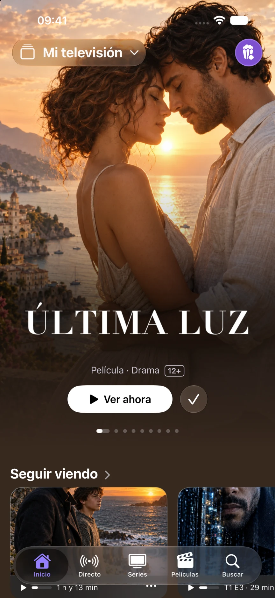
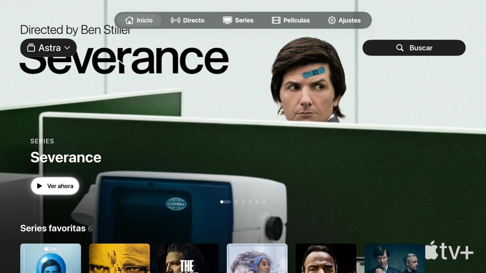
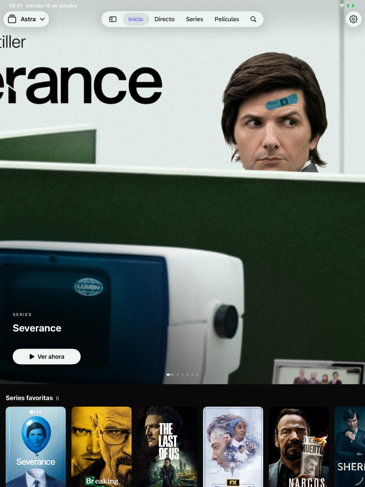

Tus listas, conectadas
Añade una URL M3U/M3U8 o una conexión Xtream. Cambia de lista y mantén separados su catálogo, favoritos e historial. También puedes importar archivos M3U en iPhone y iPad.
Hecha para tus pantallas
Tus propias listas, en un reproductor gratuito y sin anuncios de Astra. Conecta M3U o Xtream y disfruta de tus canales, películas y series en iPhone, iPad y Apple TV.
Trae tu propia lista. Aún no disponible en el App Store. Tú decides si enviar el correo para solicitar el aviso.

Cada cosa en su sitio
Una biblioteca que deja espacio a tu contenido. Tus listas, favoritos y progreso, con controles que encajan en cada pantalla.
Añade una URL M3U/M3U8 o una conexión Xtream. Cambia de lista y mantén separados su catálogo, favoritos e historial. También puedes importar archivos M3U en iPhone y iPad.
Explora canales, descubre qué están emitiendo y consulta la guía de programación XMLTV. Ten tus canales favoritos cerca.
Descubre películas y series, elige un episodio y retoma donde lo dejaste. El audio y los subtítulos están disponibles cuando los ofrece tu fuente.
Una app. Tus pantallas.
Pestañas en iPhone, navegación adaptada a iPad y controles pensados para el mando de Apple TV. Las listas compatibles, los favoritos y el progreso pueden sincronizarse a través de tu cuenta privada de iCloud.


AirPlay y Picture in Picture utilizan el reproductor nativo cuando el sistema y el formato lo permiten. Los archivos importados localmente no se transfieren como archivos reproducibles a Apple TV.
Estamos preparando el lanzamiento público para iPhone, iPad y Apple TV. Astra aún no está disponible en el App Store. Puedes solicitar un aviso por correo.
No. Astra no vende ni proporciona canales, películas, series, listas ni suscripciones de televisión. Añade una fuente que tengas permiso para utilizar.
Tu biblioteca permanece en tu dispositivo. Los datos compatibles pueden sincronizarse mediante tu base privada de iCloud. Las estadísticas de uso y los informes de fallos son opcionales, están desactivados inicialmente y se controlan por separado en Ajustes.
Esta web no tiene analítica, publicidad, formularios ni cookies propias. GitHub Pages la aloja y puede registrar información técnica de las visitas conforme a su declaración de privacidad.
Desarrollado por Juan Cazalla Estrella.